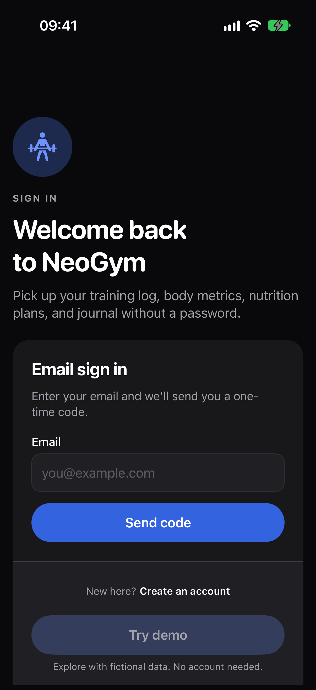

Enter demo from sign-in
2 screens · left → right
Source actions & checks
Demo Lifecycle — the recorded run can cover several visual rows.
Capture status: passed
- Create an identifiable local record, then terminate and relaunch without reset
- Exit demo and capture the public sign-in/sign-up screens without requesting OTP
- Confirm Reset demo data and verify the local edit is removed
Verified outcomes
- A local demo edit survives process termination and relaunch
- Exit and Try demo preserved local demo edits
- Reset removed the synthetic edit and recreated valid fixtures

00-sign-in50-demo-reentered